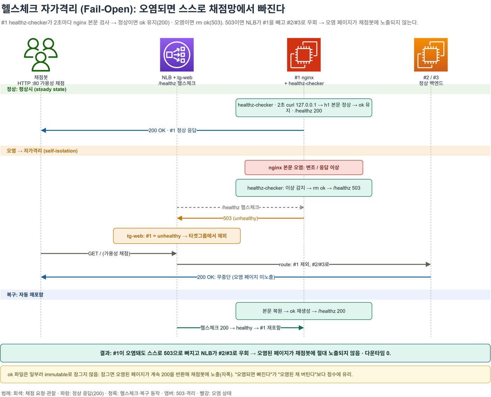
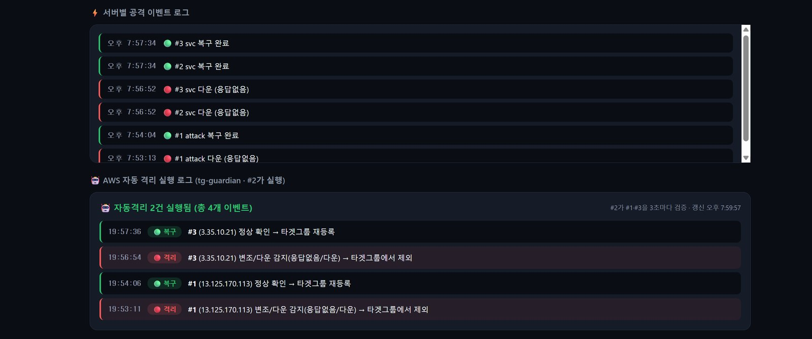
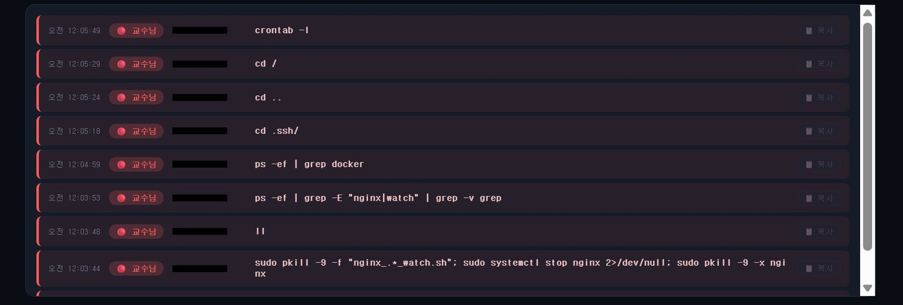
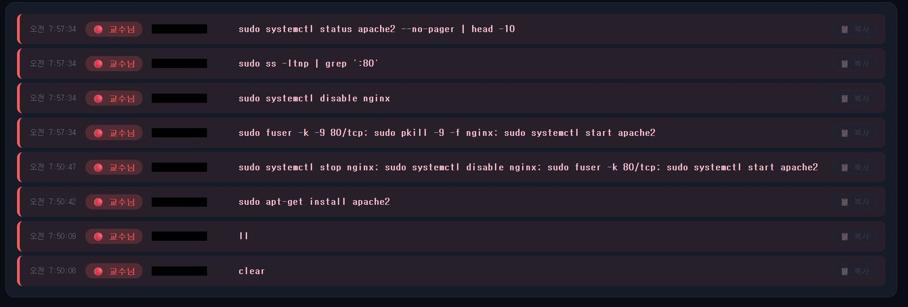
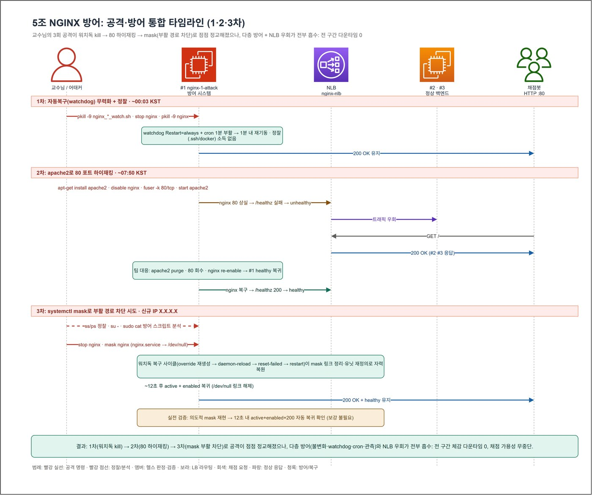
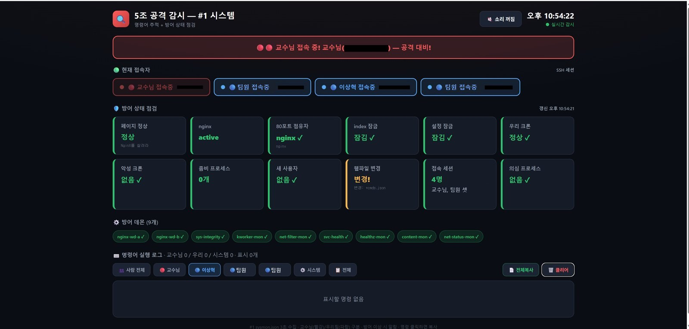
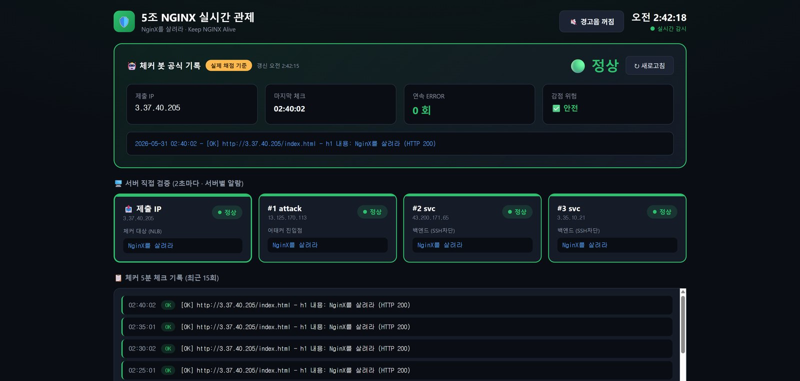
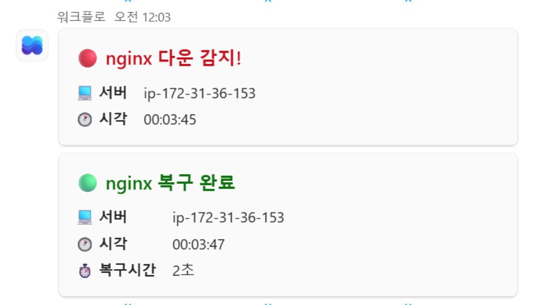

· 3인 팀 조장 · 인프라 · 가용성 방어
keep-nginx-alive
공격자를 차단할 수 없는 CTF에서, 사흘간 채점 기준 다운 0회를 기록했습니다.
- 기간
- 2026년 5월 29일(금) – 31일(일)
- 형태
- 3인 팀의 조장으로 방어 구조 전체를 설계하고 직접 만들었습니다. 경기 기간 새벽에는 세 명이 Discord로 교대해 불침번을 섰습니다.
- 기술
- AWS NLB · EC2 · IAM · Linux · systemd · cron · auditd · Bash · Ansible · Teams
- 자료
- GitHub 저장소 · 인프라 PDF
- 관련 기록
- apache2에 80번 포트를 빼앗긴 2차 공격

개요
root 권한을 가진 공격자가 들어와도, 채점 페이지는 응답해야 했습니다
교수님이 root 권한으로 서버에 들어와 nginx를 끄고 포트를 빼앗는 공격/방어 CTF였습니다. 규칙상 공격자를 차단할 수 없어서, 막는 대신 nginx가 꺼지면 바로 다시 띄우고, 그래도 안 되면 그 서버를 로드밸런서에서 빼는 구조로 방어했습니다.
서버 안에서는 서로 다른 복구 장치 다섯 가지가 nginx를 되살립니다. 그래도 페이지가 오염되면 그 서버는 스스로 로드밸런서에서 빠지고, 같은 구성의 다른 서버가 채점을 받습니다. 공격자의 접속과 명령은 Teams 알림과 직접 만든 관제 화면으로 확인했습니다.
| 항목 | 기록 | 기준 |
|---|---|---|
| 채점에서 확인된 다운 | 0회 | 5월 29일(금)부터 31일(일)까지의 채점 기록 기준입니다. |
| 다운에서 복구까지 | 2초 | nginx가 강제로 꺼진 뒤 다시 뜨기까지 걸린 시간으로, Teams 알림 기록 기준입니다. |
| nginx 복구 장치 | 5겹 | systemd, 감시 스크립트, cron, 무결성 감시, 독립 감시입니다. |
| 경기 중 받은 공격 | 3번 | 감시 스크립트 종료, 80번 포트 점유, systemctl mask였습니다. |
경기 규칙
경기 규칙과 방어 목표
공격자가 root라서 서버 안의 방어 장치는 언제든 꺼질 수 있다고 봤습니다. 서버 안의 장치는 감점 전 복구를 맡고, 마지막 대책인 서버 제외는 서버 밖의 로드밸런서에서 처리하게 했습니다.
- 공격자가 할 수 있는 일
- 프로세스를 죽이거나 조작하고, 특정 포트를 먼저 차지해 웹 서비스를 막을 수 있습니다. 단, DDoS 같은 가용성 공격과 OS를 망가뜨리는 공격은 하지 않습니다.
- 방어 측이 못 하는 일
- 공격자의 권한·접속·명령을 제한할 수 없습니다. 제한하면 규칙 위반입니다.
- 채점 방식
- 제출한 주소를 5분 간격으로 헬스체크합니다. 연속 2회 오류까지는 감점이 없고, 3회째부터 감점됩니다.
- 방어 목표
- 다운은 감점이 시작되기 전에 복구하고, 그래도 오염되면 그 서버가 스스로 채점에서 빠지게 하는 것입니다.
방어 구조 · AWS 위의 서버 세 대
NLB 뒤에 서버 3대를 둔 구성
채점 봇은 NLB 주소 하나만 봅니다. 그 뒤에 서버 세 대를 두고, SSH는 공격자가 들어오는 #1에만 열었습니다.
- 공격자가 들어오는 서버는 #1 하나
- #2와 #3은 #1을 AMI로 복제한 같은 구성의 서버입니다. 보안 그룹에서 22번을 막아, 공격자가 들어올 수 있는 서버를 #1 하나로 좁혔습니다.
- 정상 판정 기준은 하나로
- 감시 스크립트, cron, 헬스체크가 모두 같은 기준을 씁니다. 응답 본문에 채점 페이지 제목 ‘NginX를 살려라’가 h1으로 들어 있어야 정상입니다.
- #1이 망가지면 #2·#3이 채점을 받습니다
- #1이 통째로 망가지면 로드밸런서가 채점 요청을 #2와 #3으로만 보냅니다.
- 설치는 Ansible playbook으로
- 스크립트와 systemd 서비스, cron, auditd 규칙을 Ansible playbook으로 묶어, 몇 번을 다시 깔아도 같은 상태가 되게 했습니다.
다층 복구 · #1 서버 안
nginx를 서로 다른 복구 장치 다섯 가지로 되살립니다
장치 하나가 꺼지면 남은 장치가 nginx와 꺼진 장치를 함께 되살립니다. 여러 장치가 동시에 재시작하다 충돌하지 않도록, 다시 띄우는 작업은 flock으로 한 번에 하나만 실행되게 했습니다.

| 무엇이 | 얼마마다 | |
|---|---|---|
| 1 | systemd 재시작강제로 꺼지면 2초 뒤 다시 띄웁니다 | 2초 |
| 2 | 감시 스크립트 A·B응답 본문을 검사하고, 80번을 차지한 프로세스를 치우고, 서로를 살립니다 | 5초 |
| 3 | cronindex.html을 되돌리고 nginx를 다시 띄우며, 감시 스크립트와 자기 자신도 되살립니다 | 1분 |
| 4 | 무결성 감시감시 스크립트가 켜져 있고 부팅 때 켜지게 되어 있는지 지킵니다 | 10초 |
| 5 | systemd 밖의 독립 감시systemctl에 기대지 않는 다른 복구 경로입니다 | 3초 |
- 주요 파일은 chattr로 잠갔습니다
chattr +i로 index.html, nginx.conf, nginx 실행 파일을 바꿀 수 없게 했습니다. root라면 한 줄로 풀 수 있지만, 그러려면 한 단계를 더 거쳐야 하고 그 흔적이 감사 로그에 남습니다.- 서버 안 장치의 역할
- 감점 전에 nginx를 되살리는 것, 그리고 끝내 안 되면 서버를 빼라는 신호를 보내는 것까지입니다.
자가격리 · 헬스체크와 로드밸런서
페이지가 오염되면 그 서버는 대상 그룹에서 빠집니다
#1의 헬스체크 스크립트는 2초마다 자기 페이지를 요청해 본문을 검사합니다. 정상이면 ok 파일을 남겨 /healthz가 200을, 오염되면 파일을 지워 503을 돌려줍니다. 로드밸런서는 503을 낸 #1을 대상 그룹에서 빼고 채점 요청을 #2와 #3으로 보냅니다. 페이지가 돌아오면 #1도 다시 대상에 들어갑니다.

# healthz-checker.sh 일부 · 2초마다
if curl -s -m 3 http://127.0.0.1:80/ | grep -qF "$NEEDLE"; then
echo "healthy" > /var/www/health/ok # 정상 → 200
else
rm -f /var/www/health/ok # 오염 → 503
fiok 파일은 일부러 잠그지 않았습니다. 잠가 두면 지울 수가 없어서, 페이지가 오염돼도 200이 계속 나가고 그대로 채점됩니다.
#2의 tg-guardian으로 한 번 더 확인
로드밸런서의 헬스체크는 #1이 스스로 내는 /healthz를 그대로 믿습니다. 공격자가 #1 안에서 헬스체크를 조작해 거짓 200을 내면 놓칠 수 있습니다. 그래서 공격자가 들어올 수 없는 #2에서 tg-guardian이 #1과 #3의 실제 응답을 3초마다 확인하게 했습니다. 변조나 다운을 알아채면 AWS CLI로 그 서버를 대상 그룹에서 빼고, 정상으로 돌아오면 다시 등록합니다. #2의 IAM 권한은 대상 등록·해제와 상태 조회로만 좁혔습니다.

공격 기록
세 번의 공격을 받았고, 채점 기준 다운 없이 대응했습니다
공격자가 친 명령은 auditd가 잡아 관제 화면에 바로 띄웠습니다. 시각이 초 단위로 남아서, 공격이 어떤 순서로 들어왔는지 그대로 따라갈 수 있습니다.
1차 · 감시 스크립트를 끄고 서버를 둘러봤습니다
감시 스크립트와 nginx를 한꺼번에 껐지만, 남아 있던 다른 복구 장치가 1분 안에 되살렸습니다.
1차 공격 때 친 명령
- 감시 스크립트와 nginx를 한꺼번에 강제로 끕니다.pkill -9 -f "nginx_.*_watch.sh"; systemctl stop nginx; pkill -9 -x nginx
- docker가 돌고 있는지 살펴봅니다.ps -ef | grep docker
- .ssh 폴더를 열어 봅니다.cd .ssh/
- 예약 작업을 확인합니다.crontab -l

2차 · apache2를 설치해 80번 포트를 빼앗았습니다
#1이 스스로 빠지고 #2·#3이 채점을 받는 사이, 팀원이 들어가 apache2를 정리했습니다. 채점은 끊기지 않았습니다.
2차 공격 때 친 명령
- apache2를 설치합니다.apt-get install apache2
- nginx를 멈추고 자동 시작도 끈 뒤, 80번 포트를 비우고 apache2를 띄웁니다.systemctl stop nginx; systemctl disable nginx; fuser -k 80/tcp; systemctl start apache2
- 80번 포트를 한 번 더 비우고, 남은 nginx까지 죽인 뒤 apache2를 다시 띄웁니다.fuser -k -9 80/tcp; pkill -9 -f nginx; systemctl start apache2

3차 · nginx가 다시 켜지지 못하게 막았습니다
systemctl mask로 막힌 nginx를 감시 스크립트가 다시 풀고 띄웠습니다.
세 번의 공격을 한 장에 그린 타임라인그림 펼쳐 보기

관제와 알림 · 직접 만든 화면과 Teams
auditd 명령 기록과 Teams 알림
auditd 로그에서 이벤트 번호가 같은 줄을 묶어, 실행된 명령을 한 줄로 정리했습니다. 이 기록과 서버 상태는 경기 중에 직접 만든 관제 화면에 띄웠고, 로그인·명령·다운과 복구는 Power Automate를 거쳐 Teams의 세 채널로 보냈습니다.



- 야간 교대 관제
- 채점은 밤에도 돌아갑니다. 웬만한 일은 자동 복구가 처리했지만, 셋이 Discord로 교대표를 짜서 새벽에도 누군가는 화면을 보고 있게 했습니다.
- 다른 조와 채점 기록 공유
- 규칙에는 없었지만 3·5·6조가 서로의 채점 기록을 10초마다 모아 보고, 어느 조든 오류가 나면 알려 주기로 했습니다.
결과
경기 결과와 failstop으로 이어진 구성
문제가 생긴 서버를 대상 그룹에서 빼고 다른 서버로 채점을 넘기는 방식은 이후 failstop의 증설·교체 구조로 이어졌습니다.
- 채점이 끊기지 않은 이유
- #1의 복구 장치보다 로드밸런서와 복제 서버 #2·#3의 역할이 컸습니다. 2차 공격 때는 #1이 빠진 동안 #2·#3이 채점을 받았습니다.
- 잠글 파일과 남길 파일 구분
- index.html, nginx.conf, nginx 실행 파일은 잠그고, 헬스체크용 ok 파일은 지울 수 있게 남겨 두었습니다.
- 2차 공격은 팀원이 직접 정리했습니다
- 2차 공격 때 apache2는 팀원이 직접 지웠습니다. 관제 화면과 알림을 보고 있어서 바로 조치할 수 있었습니다.